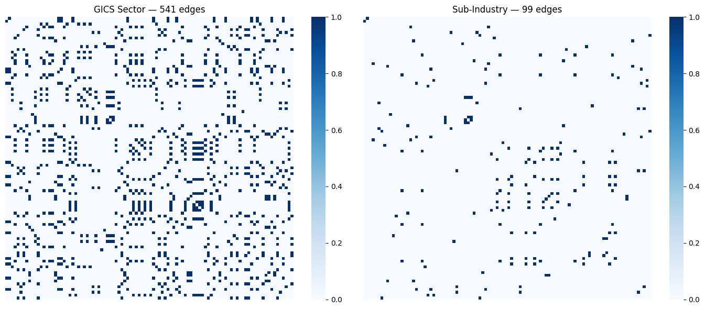
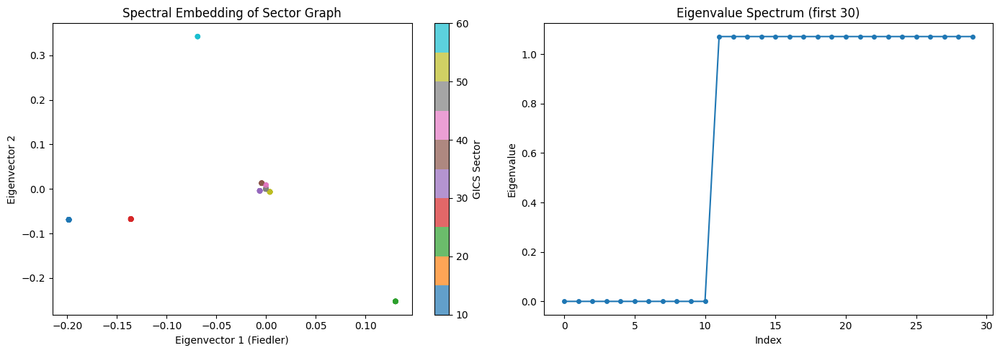
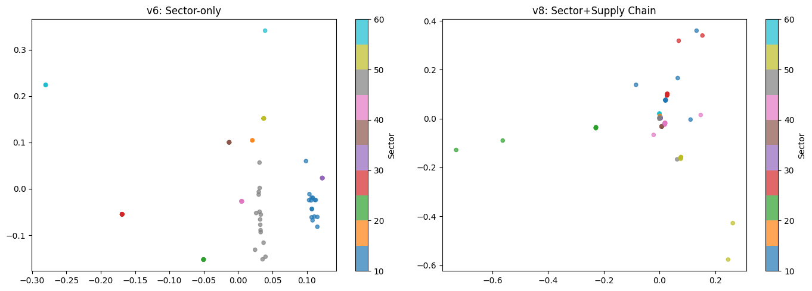
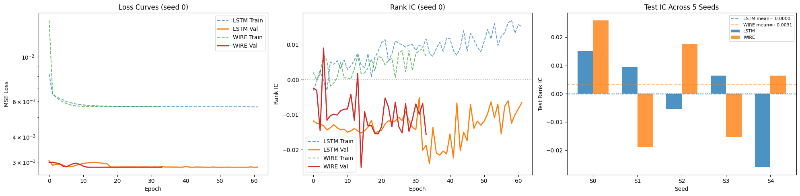
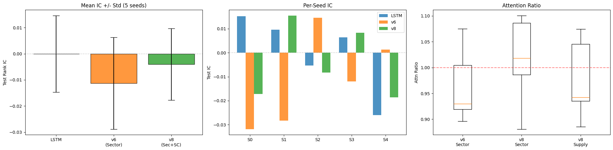
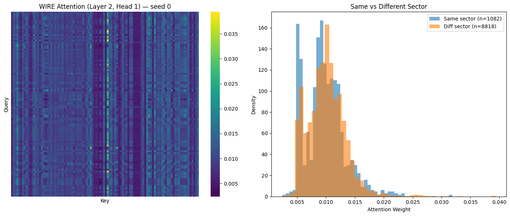
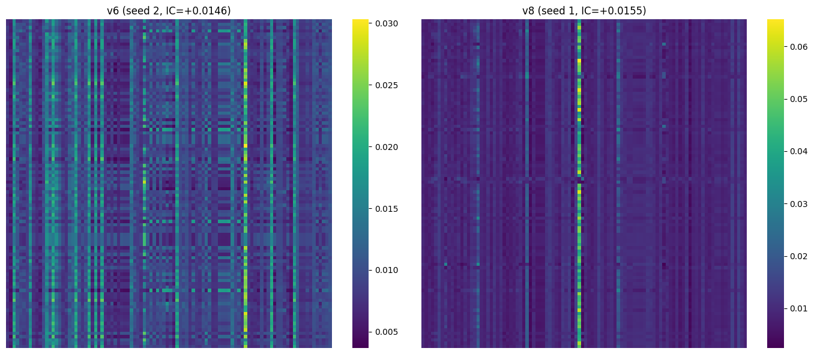

STAT 3106 · Columbia University · March 2026
WIRE: Wavelet-Induced Rotary Encodings for graph-topology-aware attention
Architecture Overview
Financial markets exhibit complex structural dependencies. While recent advancements like the Differential Graph Transformer (DGT) effectively capture dynamic price correlations, they often ignore fundamental business topologies, making them vulnerable to spurious statistical noise. This project proposes a spatial-temporal framework that extends the DGT architecture by injecting explicit structural relationships (e.g., Supply Chains, Sectors). By treating the S&P 500 as a fully-connected graph where multi-relational topologies are mathematically injected via WIRE (Wavelet-Induced Rotary Position Encodings), our model aims to differentiate true risk spillovers from coincidental market noise, achieving superior risk-adjusted performance during regime shifts.

Adjacency matrices for the GICS Sector graph (541 edges, density 0.11) and the Sub-Industry graph (99 edges, density 0.02). Only the sector graph exceeds the density threshold required for clean Laplacian eigenvectors.

Left: spectral embedding of the sector graph (Fiedler eigenvector vs. 2nd eigenvector), colored by GICS sector. Stocks in the same sector cluster together, validating that the Laplacian captures relational structure. Right: eigenvalue spectrum showing a clear spectral gap.

PCA of spectral coordinates for v6 (sector-only, 16 dims) vs. v8 (sector + supply chain, 16 dims total: 9 sector + 7 supply). Both models use M_SPECTRAL = 16; v8 splits the budget proportionally to spectral energy across both graphs. Late fusion preserves sector clustering while injecting supply-chain structure.

Left: MSE loss curves (log scale). Centre: Rank IC during training — WIRE and LSTM converge similarly, with high seed-to-seed variance. Right: test IC across all 5 seeds for LSTM vs WIRE, showing the variability that motivates multi-seed evaluation.
3 configurations × 5 random seeds · paired t-tests

Left: mean test Rank IC ± std for Baseline LSTM, v6 (Sector WIRE), and v8 (Sector + Supply WIRE) — all within the ±0.03 noise band; no pairwise difference is statistically significant (p > 0.49). Centre: per-seed breakdown showing high variance relative to mean. Right: attention ratio boxplot — v6 (sector) achieves ratio ≈ 0.96 (non-uniform), while v8 (sector + supply) is ≈ 1.01, indicating the additional supply-chain graph partially cancels the sector rotations at this data scale.

Left: WIRE attention heatmap (Layer 2, Head 1) for the best seed — block structure aligns with GICS sectors. Right: density of attention weights for same-sector vs. different-sector pairs, confirming WIRE concentrates attention within sectors.

Attention maps for the best-seed v6 (sector-only) and v8 (sector + supply chain) models. The v8 map shows finer-grained structure from the additional supply-chain topology.